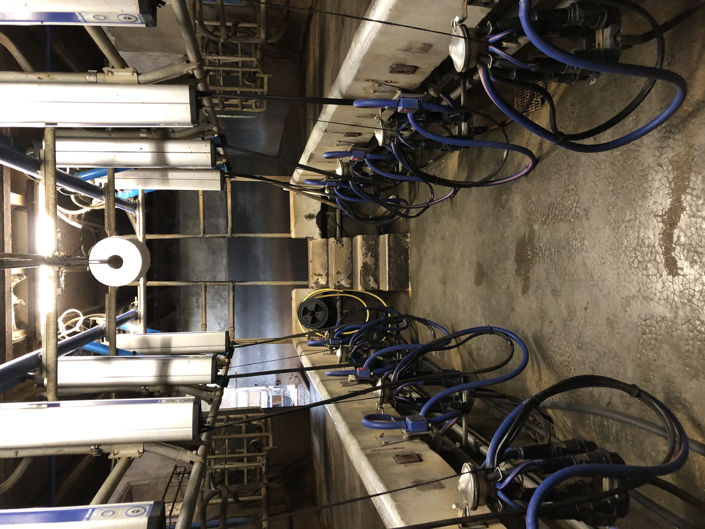

Espace Professionnels
Vous êtes pro ? Référencez les Douceurs des Collines.
Épiceries, restaurateurs, supermarchés, collectivités via Agrilocal : on vous accompagne, du premier rendez-vous à la livraison régulière.
Pourquoi nous référencer
Un produit qui se vend, qui tient en rayon, qui se raconte.
01
Produit local et tracé, issu d'un troupeau unique nourri à la prairie.
02
Sans conservateur, conservation 24 jours sur les yaourts — un atout réel en rayon.
03
Demande consommateur forte sur les produits laitiers fermiers, particulièrement les yaourts en pot verre / plastique référencé.
04
Référencés Agrilocal pour les collectivités : commande en quelques clics, livraison locale.
« Le yaourt vanille des Figeac, c'est devenu un incontournable. Nos clients reviennent pour ça — la texture, le sucrage juste, et la garantie d'un produit qui n'a pas voyagé en camion frigo pendant trois jours. »Maison Ginisty · Boucherie-crèmerie · Rodez
Demande de référencement
Quelques infos et on revient vers vous sous quelques jours.
Ils nous font confiance
— Halles de l'Aveyron —
— Maison Ginisty —
— Morin Fromager —
— Intermarché —
— L'Entre Deux —
— Agrilocal —